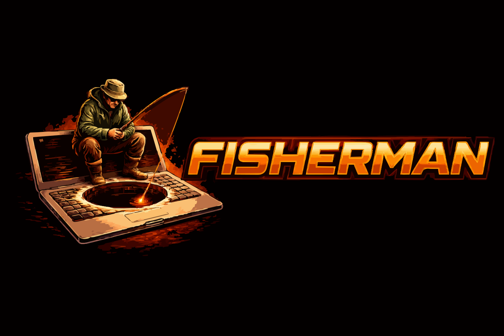

Tools untuk fisherman yang menyediakan pelacakan lokasi akurat, aktivasi kamera target, dan informasi perangkat.
$ ls -la /fisherman/dist/bin/
--- FISHERMAN TOOLS SUPPORT ---
Untuk bantuan dan pertanyaan tentang tools Fisherman.
--- END SUPPORT MESSAGE ---
Encryption: ChaCha20-Poly1305 Enabled